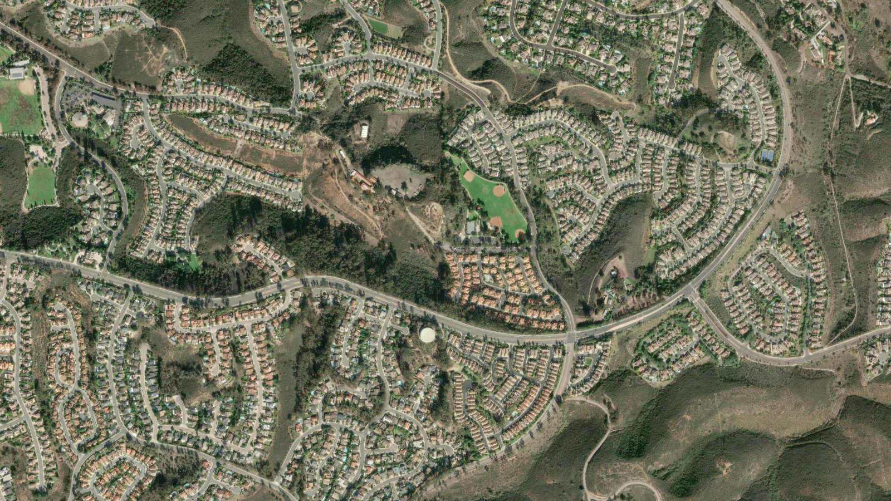

Green Phair Scripps Partners LLC

22.0Scoped hours
20Steps5 categories
0 / 20Steps recorded done0.0 hrs · as of Nov 13, 2026
- Phair interest
- 50% (Examiner tables show both “JDP 50%” and “TPC 50%”) · other 50%: KLG 2021 (Lifetime) Family Trust (Green) per 2023 return
- Property
- 11495 Cypress Canyon Rd, San Diego 92131 (Scripps Miramar Ranch) · APN 319-020-04-00 · 40.76 ac (assessor) / 40.56 ac (DEIR)
- Owner of record
- Renzulli Properties LLC, not Green Phair. Green Phair’s asset is a disputed PSA/contract right.
- Contract
- Contract price (balance sheet) / inclusive of the judgment (Doc 63 narrative) · adjusted price per award
- Litigation
- Super. Ct. 37-2022-00046736-CU-BC-CTL (consol. with 37-2024-00015835) · 11/27/2024 order: lis pendens undertaking due 12/27/2024 · judgment grew from the 3/31/25 report to the 9/30/25 report
- Buyer evidence
- Lennar LOI “upon approvals” (dated 4/17/24, signed 4/22/24); no PSA; paused 4/1/26 pending ownership dispute
- Entitlement
- Draft EIR released 8/19/2025 (comments to 10/6/2025); current plan max 45 units vs. 112 proposed; Final EIR, PC and Council pending, no time estimate. Very High Fire Hazard zone.
- Debtor vs. Examiner
- Doc 63 equity (and Phair share) · Docs 493/432 equity (and Phair share) · Sched. A/B · Examiner: zero → “Unknown”
Evidence required
97 items. One flat list; completion is saved in this browser.
Filter the checklist
Filters change the view only. Completion is saved in this browser.
1. Ownership, control & legal rights
| Done | Step | Hrs | Defense attack vector |
|---|---|---|---|
| Prove the ownership chain: 50% held by Phair directly or by The Phair Company LLC? Confirm the KLG 2021 Family Trust’s 50% | 1.5 | If the interest sits in TPC (a separate debtor), valuing it in the wrong case is a fatal mistake. | |
| FTB suspension (5/1/2025) and reactivation (12/3/2025): effect on contracts, litigation capacity and the LOI | 1.0 | Contracts made while suspended can be voidable. The defense will use this to attack the chain of rights. | |
| Trustee rights in a 50/50 LLC: §17705.02 transferee status vs. §541(c)(1); deadlock and dissolution provisions | 1.0 | A 50% economic-only interest in a deadlocked LLC is worth much less than half of NAV. | |
| Confirm the asset is a contract/option right under the 2018 PSA, not fee title | 0.5 | The debtor carries land it doesn’t own at a post-entitlement figure. Valuing it as land is the most obvious overstatement. |
2. Underlying asset value & cash flows
| Done | Step | Hrs | Defense attack vector |
|---|---|---|---|
| Verify entitlement status vs. debtor claims (PC “approved”; Council Aug 2026 in Doc 63, then Oct 2026 in Docs 493/432) | 1.5 | Reports say approval is imminent; the public record shows a Draft EIR. Adopting the debtor’s timeline isn’t defensible. | |
| Contract economics: what Green Phair must pay to obtain title | 1.5 | Getting the strike price wrong changes the equity spread by millions. | |
| Vet the Lennar LOI and its pause | 0.5 | An LOI from a party that doesn’t own the land, then paused, isn’t market value. | |
| Support claimed project spend and income-statement figures | 1.0 | Unsupported sunk costs aren’t value; the defense will cite the zero-asset return. | |
| Expected-value model for an option-like claim: p(win) × p(approvals) × [G − price owed − judgment(t) − CEQA cost − Fund III mitigation/endowment − carry] ÷ (1+r)^t, with a sensitivity grid | 1.5 | A point estimate on a claim this contingent won’t survive cross. A probability grid shows rigor. |
3. Comparable sales & market benchmarks
| Done | Step | Hrs | Defense attack vector |
|---|---|---|---|
| Scripps Ranch / I-15 corridor residential land sales by entitlement stage | 1.5 | The debtor’s post-entitlement figure has no comp support. A mixed office/land sale as a comp will be attacked. | |
| Entitled vs. unentitled pricing and per-unit metrics (112-unit plan vs. contract vs. by-right 45-unit scenario) | 1.0 | Pricing at the 112-unit plan when only 45 units are allowed today is a prospective value. | |
| Benchmarks for assignable purchase rights and land with clouded title | 1.0 | Treating a disputed contract right like fee land ignores the litigation cloud. |
4. Liabilities, encumbrances & litigation
| Done | Step | Hrs | Defense attack vector |
|---|---|---|---|
| Judgment amount and accrual: growth from Doc 63 to Docs 493/432 | 1.0 | The debtor’s equity rose while the judgment grew. Show that inconsistency with evidence. | |
| Lis pendens and undertaking after the 11/27/2024 order (Judge Blaine K. Bowman, Dept. C-74): 10% × adjusted contract price × 3 yrs, due 12/27/2024 or lis pendens expunged | 1.0 | If the bond wasn’t posted and the lis pendens was expunged, Green Phair’s leverage may be gone. | |
| Litigation outcome and status: court found “significant disputes” over whether the PSA terminated; stay-relief proceedings | 1.0 | The probability of winning title drives the whole value. It needs a documented basis. | |
| Explain liabilities that disappeared: loans and the option asset in Doc 63, gone in Docs 493/432 | 1.0 | Unexplained balance-sheet changes impeach the debtor’s numbers. Michael must not repeat them. |
5. DLOC / DLOM, sensitivity & reconciliation
| Done | Step | Hrs | Defense attack vector |
|---|---|---|---|
| DLOC for a 50/50 deadlocked interest, possibly assignee-only | 1.0 | Counsel will argue full member rights (lower DLOC) or none. The answer must come from the documents. | |
| DLOM and double-count check against the litigation probabilities and discount rate | 1.0 | Litigation risk is already in the probabilities. Discounting it again in the DLOM is double counting. | |
| Reconcile to the debtor’s reports and the Examiner | 1.0 | The court has four numbers in front of it. Michael needs a bridge to each. | |
| Workpapers, FRE 702 report section & QC review | 1.5 | Opinions without a traceable trail can be excluded. |